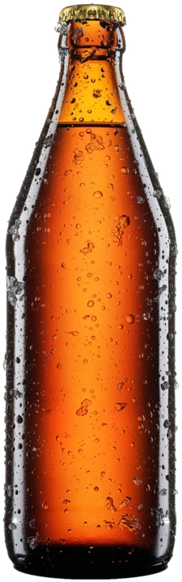

Prototype lab, Rev 3
Drawn against photographic
The Rev 2 bottle and pour were drawn in SVG. Rev 3 swaps them for a real-looking bottle and real-looking footage. Same page, same interaction, same moment, side by side.
1. The bottle
Rev 2: drawn
Rev 3: photographic cut-out

Same cut-out on cream, brown and dark. Edges are soft where the glass picks up the background.
2. The pour, as it plays on hover
Scripted identically. Left is Rev 2, right is Rev 3. Press play.
3. The opening
What is real, what is temporary
- Bottle: a photograph cut from a white background. The same bottle is used for every product slot, so it stands in for product photography. Not the client’s product.
- Pour: one 5-second, 736 x 400 clip. It looks convincing at card size and at hero size but is soft if enlarged beyond that. The glass is already part-filled when it starts, so the level does not rise from empty.
- The bottle never floats: in the footage it comes in from beyond the frame edge, and the card windows are cropped so that edge stays cut off. The cursor bottle fades out as the footage takes over.
- Wine: no footage exists, so wine cards show information only.
- Fallback: add
?pour=svgto the address to see the drawn Rev 2 pour, which is also used if the footage cannot play. - Still needed: a purpose-made pour film, specified in the asset specification in the project documents.